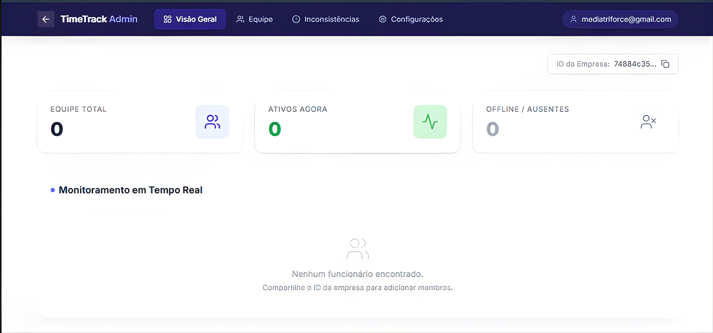

Projetos em producao
VAV Central
Sistema central desenvolvido para a ONG Viva a Vida. Unificou em uma unica plataforma tudo que antes vivia em papel e planilhas soltas: administracao financeira e de recursos humanos, coordenacao de projetos, comunicacao interna e gestao pedagogica completa. Quatro modulos independentes, uma plataforma, zero improviso.

Administracao — gestao financeira e recursos humanos
Coordenacao — planejamento e supervisao de projetos
Comunicacao — marketing, avisos e redes sociais
Pedagogia — material didatico e acompanhamento
Eliminou papel e planilhas da operacao da ONG
2 anos em producao com usuarios reais
Time Track
Sistema de gestao de equipe com controle de ponto, rastreamento de demandas e dashboards gerenciais em tempo real. Entrega o que todo gestor precisa e raramente tem: visibilidade real sobre presenca, ativos agora, ausentes e inconsistencias — sem planilha, sem pergunta no WhatsApp.

Equipe Total — headcount completo da empresa
Ativos Agora — quem esta trabalhando neste momento
Offline / Ausentes — rastreamento de presenca
Monitoramento em Tempo Real com atualizacao automatica
Visao Geral, Equipe, Inconsistencias e Configuracoes
Testado em ambiente real — equipes operacionais
CGR1-Planner
Planner semanal gamificado com sistema de XP, sincronizacao ao Google Calendar e dashboards de produtividade avancada. Transforma planejamento — que as pessoas sabem que precisam fazer mas nunca mantêm — em progressao com recompensas. Feed diario, visao semanal, modelos prontos e categorias personalizaveis.

Nivel e pontos por atividade concluida — progressao visivel
Visao do dia com atividades e foco total planejado
Planejamento semanal completo com visao de equilibrio
Volume de tarefas planejadas vs focos concluidos
Sync com Google Calendar — automatico
Templates prontos para diferentes tipos de semana